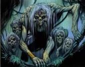
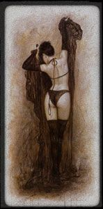
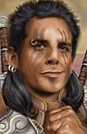

Les Terres de Kirin Tor
Ère du Renouveau [280]
Ère du Conflit [287]
Troisième Ère [406]
Quatrième Ère [334]
Cinquième Ère [184]
Lune de la Force [74]
Décade du Panda [29]
Le Deuxième Rassemblement Gnome
Ilunagar fit parvenir l'enregistrement suivant aux histoiriens, de la part de la Gnome Inc
*vous entendez une petite voix*
....sssshhhhhhHHHHhss...b'zour!
Z'ai l'honneur de vous zannoncer que, apres le succès du premier rassemblement Gnome (http://champignon.chaotique.free.fr/GnomeParty.wmv) nous organisons une autre fête!
Elle se tiendra le samedi 11 Février aux Salines (au sud des milles pointes), vers 20h.
Mais vous zinquiétez pas, les plus zeunes pourront venir grâce à la caravane qui va partir de ironforze a 18h.
Ze vous laisse une petite bande annonce de la fête! (http://champignon.chaotique.free.fr/pub.wmv)
En espérant que nous serons nombreux!
*la transmission se finit sans problème, ce qui est extremement rare chez les inventions de Lylypuce*
'ps-les persos non gnomes sont acceptés, mais si vous voulez participer, faites l'effort de creer un perso gnome pour l'occasion :), idem si vous etes d'un autre serveur.)
[Phalenopsis] Le Rêve - Chute
*vous entendez une petite voix*
....sssshhhhhhHHHHhss...b'zour!
Z'ai l'honneur de vous zannoncer que, apres le succès du premier rassemblement Gnome (http://champignon.chaotique.free.fr/GnomeParty.wmv) nous organisons une autre fête!
Elle se tiendra le samedi 11 Février aux Salines (au sud des milles pointes), vers 20h.
Mais vous zinquiétez pas, les plus zeunes pourront venir grâce à la caravane qui va partir de ironforze a 18h.
Ze vous laisse une petite bande annonce de la fête! (http://champignon.chaotique.free.fr/pub.wmv)
En espérant que nous serons nombreux!
*la transmission se finit sans problème, ce qui est extremement rare chez les inventions de Lylypuce*
'ps-les persos non gnomes sont acceptés, mais si vous voulez participer, faites l'effort de creer un perso gnome pour l'occasion :), idem si vous etes d'un autre serveur.)
Chute[Phalenopsis] Le Rêve - Soins
[justify]Le ruisseau disparaît, emportant avec lui les arbres, les animaux. Phalé se retrouve en haut dun pic rocheux. Lélévation est telle quil ne distingue pas le sol en bas. Sa tête tourne, il sassoit pour se stabiliser. Il ferme les yeux et les rouvre ... Lire la suite >>>
Soins[Laurëlïn] Alias Sombrelune
[justify]
Il tombe sur ses pattes quelques mètres plus bas. Cest un sol dallé de pierres. Interdit, il regarde autour de lui. Des orcs sont là, non loin. Il en compte sept, accompagnés de deux loups. Il ne comprend pas. Où sont passés le vide, les pics, Nal ... Lire la suite >>>
Il lui avait dit qu'ils devaient se separer, que leur relation n'était pas facile à vivre et a comprendre pour les autres. Il lui avait dit qu'elle était encore trop jeune pour subir ses regards accusateurs. Alors il a decidé de la quitter.[Phalenopsis] Le Rêve - Obscurité
Elle sentait la tristesse et la c ... Lire la suite >>>
Obscurité[Eryka] Parias d'Azeroth
[justify]Lorsquil rouvre les yeux, le druide ne voit quun paysage dévasté. Il fait nuit. Des étoiles brillent dans le ciel. Il cherche la lune mais elle est cachée derrière les nuages. Perdu, il avance dans ce paysage nu, rocailleux. De la poussière s ... Lire la suite >>>
Qui sommes nous ? Que sommes nous ?[Phalenopsis] Le Rêve - Rage
Comment ca à commencé ?
Certains se posent des questions, notre histoire nest pas souvent facile à raconter, et facile à entendre par la même occasion.
Tout à commencé par Ielou, elle est la mère fondatrice de notre famille. Mère ? ... Lire la suite >>>
Rage[Promethee] Le choix
[justify]La rage emplit le druide. Il laisse la douleur lenvahir comme jamais elle ne la fait. Ours prend possession de son corps, de son esprit. Lelfe se retire loin, très loin, tout au fond de lui-même.
Il court en rond dans la poussière, essayant dattr ... Lire la suite >>>
Le vent fouettait son visage et faisait voleter les poils blanchis de sa barbe proprement tressés de part et d'autre de son visage, ainsi que sa longue queue de cheval partant du sommet de son crane.[Loam] Récit
L'orc fixait l'horizon. Les yeux perdus dans le vide, il semblait ne plus ... Lire la suite >>>
(effacé) ... Lire la suite >>>[Phalenopsis] Le Rêve - Ourson
Ourson[Nausicaâ] Chroniques de l'Epée d'Ishara XVIII: Un rêve parfait.
[justify]Des griffes crissent sur les pavés. Un regard mauvais balaye la ruelle. Des pierres empilées les unes sur les autres entourent lours. Il avance pas à pas, méfiant. Il arrive dans une clairière, cachée profondément dans cette forêt de pierre. Une ... Lire la suite >>>
Pluie de cendres sous un ciel de tempête hurlante.[Larmelune] Papier froissé
Ange solitaire aux ailes de sang, au regard de flammes, immobile dans un vent de fin des âges.
Une épée plantée au sol, qui cache sous son sommeil et sa paix toute une fureur jamais exprimée ou vécue.
En reflet, deux aut ... Lire la suite >>>
[Salazare] Confession au bord d'un lac.
Terne, sombre unisson monochrome,
Quand plus rien ne vibre dans les ténèbres,
Aucune énergie nanime mes paumes.
Se lamentant dune caresse glabre,
Et lagonie est silencieuse
Sans tourments, sans passions, sans tempêtes
Ni orneme ... Lire la suite >>>
Une journée, pas terrible apres une nuit immonde. Hier soir en descendant a Goldshire espérant que ça soit plus calme qu'à Stormwind... Ouais parce qu'ils deviennent zin zin a Stormwind, il pleut des pétales de rose et tout le monde se roule des pelles... Je suis tombé sur u ... Lire la suite >>>[Radjah] [Radjah/Pensées de Manzo XIII Cauchemars]
[justify][Phalenopsis] Le Rêve - Cauchemar Page 564
Mon corps endolori se réveille... j'ai peur. L'obscurité. J'ai le goût du sang qui reste coincé au fond de ma gorge. Le parfum amer de la mort rôde, putride. Je suis ... enchaîné ?? Mes liens ... Lire la suite >>>
Cauchemar[Duvnarel] Destins scellés - 12
[justify]Phalenopsis joue avec son fils, dans lherbe. Il est devant sa maison. Melugaia est assise sur le porche, en train de se balancer doucement dans un fauteuil. Elle allaite leur fille.
Il ne peut sempêcher denvier la petite. Il aimerait être à s ... Lire la suite >>>
C'est de justesse qu'elle avait pu se tirer de ce mauvais pas. Mais elle était seule. Déconnectée de son corps laissé à l'abandon dans cette portion de Rêve Emeraude qu'elle avait créé, son esprit avait trouvé refuge très loin dans les profondeurs du royaume d'Ysera. Et ceci ... Lire la suite >>>[Melugaia] Veille
Assise sur le rebord du Puit de Lune, près du Refuge de Malfurion, la druide s'était perdue dans la contemplation d'un brin d'herbe. Son visage sans émotion trahissait la séparation entre son corps et son esprit.[Lae] Il y a quatre mois
Le sang rouge souillait la terre. une clameur s'élevait. U ... Lire la suite >>>
Il y a quatre mois[Phalenopsis] Le Rêve - Voix
Un éclair tombe une nouvelle fois à quelques centimètres delle, faisant voler quelques morceaux de terre ocre et levant un nuage de poussière. Lae se couvre la bouche dune main, et toussote en reprenant son chemin. Les territoires inhos ... Lire la suite >>>
Voix[Kayaris] Le passé d'une louve (chapitre troisième)
Viens Viens à moi
Je peux daider à les sauver tous.
Seul tu ne pourras rien.
Tu as besoin de moi.
Viens.
[justify]La voix est impérative et éclate comme un éclair dans lesprit embrumé de Phalé. Il connaît cette voix. Q ... Lire la suite >>>
Cela faisait plusieurs mois que Kayaris avait prit le bateau vers la grande cité des elfes, son peuple. Le druide qui lavait secouru, Ethanael lavait confiée au cercle cénarien de Darnassus.[Lae] Il y a trois mois
Iseraduna avait été relâchée dans la forêt, plusieurs fois, Kayaris avait ten ... Lire la suite >>>
Il y a trois mois[Cheena] {Cheena} Radjah, chassé ?
Plic Plic... Plic
Le calme règne autour de Lae.
Plic Plic... Plic
Comme dans un cocon, son corps ne réagit plus et elle ne voit pas ce qui lentoure. Le profond sommeil dans lequel elle a sombré la coupée des réalités. Elle ... Lire la suite >>>
[i]Chère Ménitra,[Phalenopsis] Le Rêve - Bataille
Je pense que l'Ombre m'a définitivement abandonnée. Je ne sais si la Lumière sera une meilleure alliée. Radjah a été enlevé. Le sort fait preuve d'une ironie qui me remplit d'amertume. Mais c'est le sort qui m'était reservé, de toutes manières, lorsque ... Lire la suite >>>
Bataille[Lae] Il y a deux mois
[justify]Phalenopsis avance courbé, suivit de ses compagnons. Il tient son épée dans la main droite, son bouclier lui couvre le bras gauche. Sa cotte de maille pèse de tout son poids sur ses épaules. Elinia et les autres le suivent. Il a de nombreuses fois ... Lire la suite >>>
Il y a deux mois[Phalenopsis] Le Rêve - Sérénité
Daenn est le nom de sa bienfaitrice. Le dernier rempart, le refuge et havre de paix, qui ont permis à Lae de survivre et surnager, désormais à labri des horreurs qui hantent les eaux troubles de ses souvenirs. Une femme au regard occulté ... Lire la suite >>>
Sérénité[Duvnarel] Destins maudits - 1
[justify]Le druide est assis dans lherbe haute. Au-delà des hautes tiges qui lentourent, il ne voit rien, juste la brume verte, toujours aussi impénétrable. Il serre les poings. Cest alors quil remarque le talisman quil a dans la main. Une étoffe runi ... Lire la suite >>>
<Ce nouveau fil de récits fait suite à Destins Scellés>[Valragh] La vie d'un Orphelin de la Horde
Calmement elle ouvrit les yeux. Les souvenirs d'une souffrance atroces s'estompaient déjà. Le mal qui la rongeait faisait maintenant partie d'elle. Cela n'avait été qu'un mauvais moment à passer. Oh, elle n'appréciai ... Lire la suite >>>
Alors que Valragh passait rendre visite aux ravissantes Sumi et Tumi, la directrice de lorphelinat Battlewail, agitant les bras, lappelât si fort que toute la capitale due lentendre.[Phalenopsis] Le Rêve - Réveil
-VALRAGH ! Ohé ! Jny crois pas !
Viens donc par là un moment.
Les ptits ... Lire la suite >>>
Réveil[Arthémìs] Le coeut y est, mais pas la tête
[justify]Phalé se redressa vivement. Sa tête tournait, son estomac se révulsait. La bile lui brûla la gorge et il se retrouva à quatre pattes, à cracher le peu que son ventre contenait dans la poussière du refuge des saisons. Les hauts-le-cur saisissaient s ... Lire la suite >>>
[i]Des heures durant j'ai cherché,[Duvnarel] Destins maudits - 2
Sans jamais vraiment trouver,
Et pourtant on y est ,
Quatre ligne dans un couplet,
Il y a des soirs ou ça ne vient pas,
Parce qu'on a pas la tête a ça,
Un souvenir et un visage,
Le décrire ne serait pas sage,
De toute façon c'e ... Lire la suite >>>
Une main s'empara du message enroulé autour d'un petit objet cylindrique posé sur le bord du lit. L'occupante de ce lit frémit et ouvrit les yeux, esquissant un mouvement de recul. Un sourire appaisant la convainquit de ne pas se lever brutalement, mais elle se releva néanmo ... Lire la suite >>>
Décade du Gorille [25]
[Woodkand] [rêve] le noir tunnel
Cette nuit... J'ai fais un rêve :[Eryka] Conclave - Naissance d'une guerre
Tout était noir, je ne voyais rien.
Je marchais, machinallement droit devant.
Sans but, vidé de tout espoir, mes pas devenaient de
plus en plus douleureux.
Je marchais et marchais... pendant un temps qui me paraissait des vi ... Lire la suite >>>
J'ai sentis mon coeur ne faire qu'un bond dans ma poitrine lorsqu'un des miens est arrivé en courant vers moi pour m'annoncer que Kilrogg était en danger. Et puis mon esprit s'est embrouillé. Danger ? Balmon ? Un duel ?...[Ethaer] Juste un nom
Nectylia est arrivé vers moi, elle était tout auta ... Lire la suite >>>
== Premier chapitre ==[Kayaris] Le passé d'une louve (chapitre quatrième)
Il y a des jours qui restent plus facilement ancrés dans notre mémoire que dautres. Il y a un jour qui pour moi restera gravé dans mon esprit plus que tout autre. Gravé au fer rouge.
Etait-ce le matin ou laprès-midi quand je méveillais, je ne ... Lire la suite >>>
Liberté . . . enfin la liberté . . .[Gardhran] Spectres de Lamelune: Prologue.
Kayaris était allongée nue dans lherbe non loin des restes du cerf leur ayant servit de repas.
Isera finissait de ronger un os en grognant. Depuis la fuite de la cité elfe, le restant de la meute découvrait ce nouveau territoire. Kay ... Lire la suite >>>
Le dragon poussa un hurlement assourdissant, faisant vibrer les stalactites accrochées au haut plafond de la caverne.[Loam] Récit
Empoignant fermement son épée, le casque bien enfoncé sur la tête, GilEritanias savança dun pas décidé, tentant de faire taire son estomac qui rechigna ... Lire la suite >>>
(effacé) ... Lire la suite >>>[Eryka] Conclave - Le pacte
Pas moyen de lui faire entendre raison, que c'était trop dangereux, que ca mettrait sa propre vie et celle de son futur enfant en périle, mais rien n'y fesait. Je savais Nectylia fragile. La perte de son mari, et le revoir enfin après de nombreux jours mais changé, dépourvu ... Lire la suite >>>[Cheena] {Cheena} Cauchemard
[i]Chère Ménitra,[Darzag] L'ombre du roi
J'ai vu des tas d'horreurs dans ma vie... On en a partagé beaucoup, et tu as été la pire, je crois... Mais ce que j'ai vu cette nuit a dépassé un seuil que je croyais ne jamais atteindre... Peux-tu croire qu'il éxiste en ce monde des êtres ... Lire la suite >>>
Cygue parut semblant sortir de nul part et s'inclina promptement devant moi.[Loam] Récit
"Bonssssoir" , la réprouvée me considérait de son regard indéchiffrable.
"Trom'Ka Cygue. Toi aussi tu es venu t'encquérir de ces nouvelles de bataille dans Andhoral ?"
Elle incli ... Lire la suite >>>
(effacé) ... Lire la suite >>>[Elethir Menefaë] [Elethir] Retrouvée
Elethir ne savait plus où chercher, ni qui chercher. Aéline ? La femme ? Lhomme aux cheveux blancs ? Où devait-il donner de la tête en premier lieu ?[Darzag] La requête à la ligue mercantile
Les options étaient nombreuses, mais lElfe sen était tenu à quelques conclusion ... Lire la suite >>>
* Un orc d'un âge certain s'avance d'un pas résolu vers le milieu du grand hall de la ligue mercantile. Ses yeux oranges irisés de vert, palpite d'une étrange énergie. Il est vêtue d'une armure rouge, recouverte par un tabard également rouge liséré de fils doré au milieu duq ... Lire la suite >>>[Phalenopsis] Appel désespéré aux druides
[justify][i]Son âme voletait dans le Rêve Emeraude. Il avait réussit à retrouver son Amour, Melugaia. Il essayait désespérément de la ramener à lui, de la sauver de cette corruption qui lavait atteinte par la faute de la Maudite. Hélas, il nétait quun jeune druide, inexpé ... Lire la suite >>>[Eryka] Conclave - Journal abandonné
[Récit ecrit par Balmon. ][Cymbelîne] Receuille: Hiver
Jour 1.
Je m'éveille...Je suis désceller de ce maudit corps et prend place. Une humaine ? Non ,trop puissante pour être une simple humaine ,quoi qu'il en soit ,ma vie est lié à la sienne , je ... Lire la suite >>>
Tel le vent de l'automne qui caresse la plaine[Phalenopsis] Sauvetage
Et apporte avec lui les souvenirs de l'été
Je veux souffler sur ta vie effaçant toutes tes peines
Les remplaçant, une par une, par ces instants volés
Tel le temps qui s'écoule lentement de nos vies
Emplissant chaque ... Lire la suite >>>
[justify]Un sourire éclairait le visage las du druide. Il tenait son amour dans ses bras, entière. Elle était revenue, elle avait été sauvée. Toute cette soirée lui apparaissait comme floue, comme entourée dun halo mystérieux.[Eryka] Conclave - Fin ou renouveau ?
Il lui avait préparé une tarte à la cerise, ... Lire la suite >>>
Aprés avoir refermer la porte de la cellule de Nectylia ,derrière lui, il repartit vers dans son coin préféré ,une large salle avec un petit bassin ,assit sur les escaliers tout en écrivant sur son journal ,le résumer de sa journée soudain une douleur astroce toucha le coeur ... Lire la suite >>>[Larmelune] Le Mal
Cest une caresse sur mes lèvres[Woodkand] [page 1] De l'ombre à la lumière
Un soir dans une ruelle, un murmure.
Légère ou possessive je menivre
Dun gout de sel, il susurre.
Le mal se distille, va et vient,
Dun mouvement humide et lent.
Moite et chaud il r ... Lire la suite >>>
Aujourd'hui, je commence un journal, où je marquerais mes idées, aventures et états d'humeur.[Elethir Menefaë] [Elethir] : Rencontre imprévue
[color=white]Le début de ce journal est un peu étrange, en effet je vais commencer par une histoire qui a
commencé il y a déjà quelques jours.[/colo ... Lire la suite >>>
Elethir la recroisa complètement par hasard. Il venait dacquérir de fines lanières de cuir chez un marchand, afin de créer des renforts efficaces pour son armure bardée de coups de griffes et de lames, quand il aperçut la jeune démoniste dans les rues ... Lire la suite >>>[Radjah] [Gwaen/Journal de bord - I - "A wa une chimage"]
[justify][Radjah] [Gwaen/Journal de bord - II - "A wa une exporatice"]Vous retrouvez, dans une vieille machine rouillée au bord du Loch Modan, un journal manuscrit.
Page 1
[color=#DAA520]Mon tendre Ashnzar, ami de toujours et relation de coeur,
Je t'écri ... Lire la suite >>>
[justify][Loam] RécitVous retrouvez, dans une vieille machine rouillée dans le désert de Tanaris, un journal manuscrit.
Page 1
[color=#DAA520]Cher Ashnzar, mon tendre aimé,
Je t'écris des centaines de let ... Lire la suite >>>

(effacé) ... Lire la suite >>>[Radjah] [Gwaen/Journal de bord - III - "A wa une puissante moniste"]
[justify]Vous retrouvez, dans une vieille tour en ruines, aux alentours d'Hillsbrad, un journal manuscrit.[Valnar] Renouveau
Page 1 à 13
[color=#DAA520]Ashnzar, pourquoi ? Pourquoi m'as tu laissée dans l'ignorance toutes ces années ? Quelles étaient tes intenti ... Lire la suite >>>
10ème jour de la Décade du Gorille ( Lune de la Force ) - Cinquième Ère
Ce matin, Un chat énorme a débarquer dans mes appartements, Daexian venait me dire qu'il avait a nouveau besoin de mon aide, ses frères d'arme, tous membre de ce qu'ils appellent "Les Orphelins de ... Lire la suite >>>
Décade de l'Ours [20]
[Duvnarel] Destins maudits - 3
- Eh bien ?[Nectylia] Retour
La voix émanait de son dos et il sursauta presque en l'entendant. Lorsqu'elle n'était pas devant ses yeux, son inquiétante interlocutrice avait cette tendance à se faire oublier. Et même s'il l'avait devant les yeux, le fait de ne plus se concentrer visuellement ... Lire la suite >>>
Plusieur mois déja que je suis sortie des grottes du temp , les souvenirs les visages je me souviens...Mais Balmon ou est -il ? , je l'ais chercher de toute part : rien .[Keshindrae] Nouvel Air
Mon enfant grandis de plus et plus et j'ai du mal a me faire a l'idée ... Lire la suite >>>
[Nectylia] Face à face
[i]A deux pas du vide, droite dans le vent, elle contemple lhorizon. La nuit est calme, silencieuse, juste habitée par le murmure du vent et le bruit des chutes, éclairée dune lune à la rondeur épanouie éclipsant toute les étoi ... Lire la suite >>>

Je le hais , ce Nert'thul , il a tuer Balmon , il a prix ca place dans ce corp...il sais , il sais que je le hais , que j'en meurt chaque jour de tristesse , est là sa joix a lui...Je ne peu me retenir de le ... Lire la suite >>>[Radjah] [Gwaen/Le Trombigwaenoscope - 1]
[justify]Bonyour. A m'appelle Gwaen ![Radjah] [Gwaen/Le Trombigwaenoscope - 2]
A wa la fille doptive de Cheena et a habite avec Rayah.
A aime beaucoup le yus de goyave, les araignées et dessiner.
A fait aussi la collection des pumes d'oiseaux et de pogryphes !
A wa vous montrer mes equisses a wa baptisé "Trom ... Lire la suite >>>
Oeuvre 8 : "Gwendolline l'autoritaire !"[Radjah] [Gwaen/Le Trombigwaenoscope - 3]
A wa été invitée au restorant avec Gwolline, pis Vaya pis trois copains à eux. Gwolline a été très toritaire avec ma. Poutant a wa restée sage... a pa ma faute si a fait des betises pafois :'( ... a failli m'être punie ... Lire la suite >>>
Oeuvre 14 : "Tyranael, un radar efficace "[Wellrythorn] Patience et amour...
L'autre your, y se passait pein de tuc à la baye de norchire. Mais comme dabitude, pessonne ne m'invite (sauf Nounie pour son niversaire). Alors a wa tenté d'y aller tousseule. Gwolline m'a grondé : "rentre à la ville ... Lire la suite >>>
[Cheena] {Cheena} Reveil
Combien de temps devrais-je encore attendre son retour ?
Reviendra-t-elle au moins ?
Elle me l'a promis sur cette lettre, suivit d'un "Je t'aime" qui semblait sincère.
Des affaires a régler... je veux bien... mais une lettr ... Lire la suite >>>

[i] Chère Ménitra,[Nectylia] Pacte
Radjah s'est reveillé. J'en suis heureuse, il a un peu de mal a parler, mais il semble serein. Un poids sur mon coeur s'envole, la famille qui se construit peu a peu n'est pas encore brisée. J'attends de rencontrer Tombelîne pour savoir ce que je dois f ... Lire la suite >>>
[ Par Eryka ][Kayaris] Cauchemar ou réalité
[u]Pas moyen de lui faire entendre raison, que c'était trop dangereux, que ca mettrait sa propre vie et celle de son futur enfant en périle, mais rien n'y fesait. Je savais Nectylia fragile. La perte de son mari, et le revoir enfin après de nombreux jours mais ... Lire la suite >>>
« [i]Lâche . . . si lâche maintenant . . . Ou est ta rage ? . . . Ces humains menacent la meute et tu courbes léchine . . . comme un chiot soumis . . . Quest devenue la louve ? Est-ce que tu désirais ? Est ce ... Lire la suite >>>[Radjah] [Radjah/Cynthea - Saveurs sanglantes]
[Seldanishen Windwhispers] Coincé...[justify]"Nous avons partagé nos chairs dans un combat précieux. Elle se mordait ses lèvres tandis que ma lame déchirait son visage comme une profonde caresse. Son regard était brûlant, ses lèvres blanches. Elle tr ... Lire la suite >>>

Voila un temps indefinissable que seldanishen ere dans le reve d'emmeraude, perdu dans ses reflexions et ses pensées.......la douleur ne l'a pas quitté, lui qui pensait trouver repos et sagesse....il n'a trouvé que troubles et doutes.....[Nectylia] Journal
" par Elune....ai je été trop prete ... Lire la suite >>>
[ Ecrit par Balmon][Rumwald] Dépression
Jour 1.
Je m'éveille...Je suis désceller de ce maudit corps et prend place. Une humaine ? Non ,trop puissante pour être une simple humaine ,quoi qu'il en soit ,ma vie est lié à la sienne , je dois éviter qu'elle succombe ou moi aussi. Elle me parla de ... Lire la suite >>>
Le bruit des mouettes...[Kayaris] Cauchemar ou réalité (suite)
Je... Je l' entends...
Elles ont tellement de chance...
_ " Rumwald. Le docteur est arrivé.
_Et bien qu' il se casse ! J' ai pas besoin de docteur ! Je veux crever c' est simple Landoald ? Je VEUX crever !
Je prend ... Lire la suite >>>
Froid . . . Si froid . . . Douleur du corps, peine de lâme . . .[Cymbelîne] Journal d'une voleuse: page 5
Un grognement perturba le silence de laube naissante. Une forme à demi recouverte de neige bougea.
Kayaris tentait de rassembler ses pensées, sa tête la faisait souffrir, comme si tous les nains de la ... Lire la suite >>>
[i]Bien des choses se sont passées depuis les dernières lignes de ce nouveau journal.[Laurëlïn] Journal - Page 1
Etrange comme le fait de simplement de mettre par écrit certaines pensées nous permettent d'y voir plus claire.
La mémoire merevient par bribes, tels les morceaux d'un puzzle. Les momen ... Lire la suite >>>
10ème jour de la Décade du l'Ours - Cinquième Ère[Rumwald] Dépression (2)
Je me sens changer, devenir differente, je ne sais comment l'expliquer. Comme lorsque j'étais petite, quand les enfants de mon âge me regardaient bizzaremnt à cause de mon côté spécial. J'avais grandis plus v ... Lire la suite >>>
J' ai fermé les volets depuis des jours...
Je ne sais plus si il fait nuit ou pas dehors...
De toutes façons, je suis bloqué dans ma tête.
Et dans ma tête, il fait nuit.
La porte s' ouvre, je l' entend. Mais je ne vois aucune lumière. Ais-je les yeux fermé ... Lire la suite >>>
Lune d'Agilité [47]
Décade du Tigre [22]
[Cymbelîne] Une nouvelle vie
[i]Des larmes sur mes souvenirs ait versé,[Rumwald] Dépression (3)
Mais la tête à nouveau me dois relever,
Et un autre but à ma vie doit trouver,
Et oublier que je suis femme...
La connaissance, le savoir viennent de m'être offerts,
Le chemin du combat doit reprendre ou me perd,
Et jeter ... Lire la suite >>>
Le noir[Seldanishen Windwhispers] Changement.....
Mon frère dit que je vais mieux...
Mais moi, je sais que je ne vais pas mieux du tout...
J' ai les yeux fermés, et j' entend la pluie sur ma fenêtre.
La pluie et le vent, qui fait claquer un peu les volets.
Ca m' enerve.
[color=white]*CLAC clac*[/co ... Lire la suite >>>
*seldanishen n'est plus le chasseur redoutable qu'il a été, sonr retour du reve d'emmeraude,est a la fois la fin d'une vie et le debut d'une autre pour lui......cette experience a faili lui couter son ame...elle ne lui aura couté qu'une part de lui meme.....a present Seldani ... Lire la suite >>>[Larmelune] L'heure du Bilan
[i]Yen a des moment dans la vie ou on erre sans but, et tout le monde vous dit souvent « cest quune mauvaise passe, ça ira mieux dans quelques temps ». Cest combien de temps « quelques temps »? Des jours, des mois, des années? J ai l impression que ça fait des ... Lire la suite >>>[Kayaris] Cauchemar ou réalité [suite]
Lelfe regardait le corps sans vie de lancienne dominante. Celle qui lavait terrorisée durant des années, tuée si facilement tandis quelle se désaltérait.[Laurëlïn] Journal - Page 2
Karays dégagea son épée du corps de la louve.
Celle qui avait ordonné tant de punition gisait à ses pieds. Selon la ... Lire la suite >>>
3ème jour de la Décade du Tigre - Cinquième Ère[Haalbarad] [Contes et légendes du Nord] : Préface
J'ai croisé une elfe en ville. Elle m'a aidé quand j'ai eus soudainement des vertiges et des nausées. Je ne m'étais pas rendu compte qu'elle était aveugle. Puis Okyto est arrivé, elle l'a appelé Tonton. Ma der ... Lire la suite >>>
[Rumwald] Depression (4)Préface
Avant que vous commenciez ce livre, je tient à vous prévenir quand à son contentu, et ce que j' ai voulu faire en l' écrivant.
Je me nomme Haalbarad de Hennepin. Je suis paladin, et on me nomme : " Le Pal ... Lire la suite >>>
[i]7ème jour de dépression...[Loam] Récit
J' ai l' impression de tenir un journal.
Comme les journaux des capitaines de navires.
J' aimerais bien être sur autre chose qu' une epave sombrante.
Mais je n' ai pas le choix.
Mon frère commence à être vraiment fatigué.
Cela fa ... Lire la suite >>>
(effacé) ... Lire la suite >>>[Wellrythorn] Mes "herbes" a moi
[Elethir Menefaë] [Elethir] AélineBaie du Butin
Ma vie a changée... enfin je pense...
Ces "herbes" de contrebande me font le plus ... Lire la suite >>>

Elethir se risqua hors de son abri. La pluie torrentielle avait enfin cessé de sabattre sur les terres dArathi et le roublard pouvait à nouveau avancer sans craindre dêtre complètement détrempé.[Scheena] Doutes
Ses semelles de cuir noir senfoncèrent dans le sol sp ... Lire la suite >>>
Je m'étais pourtant promis d'être prudente, je m'étais pourtant promis de me preserver...[Scheena] Coupable
Je dois apprendre à controler mes sentiments, à maitriser mon impulsivité... mais en ai je encore envie ?
Je ne sais pas, je ne sais plus..
Les evenements s'enchainent , plus troub ... Lire la suite >>>
Il était temps pour moi de faire un point sur ma vie, un point sur mes actes.[Scheena] Retrouvailles
J'ai commis des atrocités, de sang froid, sans jamais rien regretter presque par plaisir , par besoin de faire souffrir, je n'avais aucune pitié, aucune patience pour l'être humain, tellement faci ... Lire la suite >>>
Les yeux emeraudes me fixaient, semblant attendre une reponse, une reaction.[Scheena] Dorian
J'étais incapable de bouger, pas un mot n'aurait pu franchir mes lévres à cet instant precis.
Lorsqu'une voix resonna dans l'auberge de Thelsamar, j'ai cru defaillir, je ne voulait pas y croire. ... Lire la suite >>>
* Quelques mois auparavant*[Cheena] {Cheena} Jalouse ?
Des cris d'oiseau stridents et des battements d'ailes incessants tirérent Scheena de son sommeil.
Agressée par la vue du rapace, elle se leva en furie, contrariée de quitter les bras de son beau Hrunh.
En grognant, elle tira rapidement le par ... Lire la suite >>>
[i]Chère Ménitra,[Caitlyn] Journal - La Déesse brisée
Je ne suis plus si sure que rester sous la protection de Radjah était une bonne idée. Il se joue de moi, il se joue de mes sentiments, et le savoir ailleurs m'énerve. Que m'arrive-t-il, mère ? Comme les conseils avisés que tu aurais du me donner me manqu ... Lire la suite >>>
[i]Ammû. Déesse déchue dont je n'ai pour le moment trouvé aucune trace écrite sur Azeroth. J'ignore d'où je tiens cette légende mais elle flotte dans mon esprit comme si je l'avais entendue des milliers de fois.[Elethir Menefaë] [Elethir] Page éphèmére
[justify]Dans les temps anciens, lorsque le monde était jeun ... Lire la suite >>>
Lencre noircit la page dune écriture fine et acérée, au fur et à mesure que le vieil elfique recouvre le papier vierge.[Scheena] correspondance retrouvée
[i]Je suis parvenu, ce soir, à chasser ces voix qui hantent mon crâne. Pour combien de temps encore ? Je ne sais pas Le temps de finir cette page ... Lire la suite >>>
Lettre aux Loups Gris :[Salazare] Sombre pensées lors d'une nuit de noces
Je viens de recevoir une convocation du juge Aknoth pour le procès, je suppose qu'il s'agit juste d'une entrevue préalable puisque le lieu du rendez vous est un peu particulier : Terres foudroyées, rempart du Néant, donjon nor ... Lire la suite >>>
[i]Assis a demi-nu à a coté de Cymbelîne toujours endormie, Salazare restait silencieux dans la pénombre. Il caressait les cheveux de son épouse machinalement, prenant toutefois soins de ne pas la réveiller. Elle lui avait pourtant dit de le faire, ils avaient une nuit de no ... Lire la suite >>>[Kayaris] Cauchemar ou réalité (fin)
Comment en était-elle arrivée là ? Qu'est-ce qui avait si mal tourné ? Ou était son erreur ?[Nexus] Aventurier mort
Cela faisait bientôt dix années du rêve qu'elle essayait de trouver son erreur . . . Dix années . . . Il fallait en finir . . . Mais comment ?
Sa propre mort ... Lire la suite >>>
Un jour, alors que je surplombais une colline...j'ai aperçu quelqu'un mais...en fait, je l'ai mangé. Désolé a son propriétaire... Merci ... Lire la suite >>>
Décade du Singe [10]
[Derdre] Exil dans la tourmente
Une tempête glaciale sest invitée dans la vallée de Dun Morogh, des vents froids emportant leurs lots de neige virevoltante et de poussière gelée. Sur la route balayée ce blizzard, Derdre marche avec difficulté, ruminant ses sombres pensées comme toujours depuis son banniss ... Lire la suite >>>[Garmoss] La voie du Duide
Se matin là la terre mère était illuminé d'un radieux soleil levant sur la région des Tarides. Je venais de me lever de mon lit dans l'auberge de la Croisée, je ramassa mes affaires et sortie après avoir payé l'aubergiste. Au dehors les péons partaient au travail. Pour moi u ... Lire la suite >>>[Laurëlïn] Journal - Page 3
4ème jour de la Décade du Singe - Cinquième Ère[Cymbelîne] Journal d'une voleuse: page 6
Je crois n'avoir jamais autant dormis qu'aujourd'hui, maman dis que c'est normal car j'ai besoin de beaucoup de repos.
Avec Talk on est arrivé en retard au mariage de Kayaris et Aladriell, enfin avant que la ... Lire la suite >>>
[i]Combien de fois peut on véritablement aimer au cours d'une vie?[Loam] Récit
Des amourettes, flirts, jeux de séductions, j'en passe...sont une chose...mais combien de fois peut on vraiment aimer de toute son âme, se laissant délicieusement consummer par le feu de la passion...dont l' ... Lire la suite >>>
(effacé) ... Lire la suite >>>[Malecius] Exorcisme
[Laurëlïn] Journal - Page 4
C'est le crépuscule, les derniers rayons de soleil se reflettant dans les écus des vaillants défenseurs de Stormwind.Un gryphon arrive dans la capitale, le fier destrier agitant ses majestueuses ailes. Un homme ... Lire la suite >>>

9ème jour de la Décade du Singe - Cinquième Ère[Eryka] L'Atrox - Le bout du monde
En ce moment c'est la nouvelle lune, c'est bizzare, j'ai comme une impression de malaise, et je ne pense pas être la seule, j'ai vu pas mal de gens dans Stormwind avec cette expression de crainte sur le visage ... Lire la suite >>>
Le bout du monde.[Eryka] L'Atrox - La lune de Nefandus
Il était tôt, peut-être était-elle la seule levé dans Stormwind à cette heure-ci, mise à part les quelques ivrognes trainant encore sur un trottoir ou les filles de joie de la rue coupe-gorge. Si tôt, que le soleil lui-même navait pas enco ... Lire la suite >>>
La lune de Nefandus
Peut-on mourir en se vidant de ses larmes comme on peut mourir en se vidant de son sang ? Quand les larmes ne viennent plus mais que le cur nest pas assez soulagé, que se passe t-il ?
Abandonné au sommet de cette falaise, elle gémiss ... Lire la suite >>>
Décade du Faucon [15]
[Eryka] L'Atrox - Dévotion de Sang
Dévotion de sang.[Loam] Récit
Des yeux fermés, un corps nu allongé sur lherbe humide à proximité du lac de cristal, une respiration plus marqué quà lhabitude. Elle nétait plus très loin, non plus très loin, elle le sentait.
Ses doigts lâchèrent lobjet précieux qu ... Lire la suite >>>
(effacé) ... Lire la suite >>>[Derdre] Pour un poulet en plus
Le soleil commence à descendre sur les champs abandonnés des marches de louest. Les silhouettes inquiétantes des defias traînant leurs carcasses fatigués à travers les routes et les fermes se font plus imposantes, plus menaçantes. Pourtant, la nature nest pas encore totale ... Lire la suite >>>[Eryka] L'Atrox - Le suiveur
Le suiveur[Angèlle] L'Attaque de la Caserne
Ses yeux transpercèrent le regard de Salamandor, sinsinuant ainsi au plus profond de son esprit, se nourrissant de son passé, de ses cauchemars, de ses peines, de ses peurs.
Pourquoi avait-il choisis de lui-même, de se rendre à elle ? Son âme é ... Lire la suite >>>
Il était vers les 20h45. Angèlle avait fini quelques quêtes et avait prit un dîné à l'Auberge du cochon siffleur dans le quartier de la Vieille Ville de Stormwind.[Larmelune] carnet de bord: le voyage
Il y eut un cri. C'était un appelle au secours d'un Paladin à la Caserne de Stormwind, à 30 mètre de ... Lire la suite >>>
[i]Lordaeron jour 1.[Laurëlïn] Journal - Page 5
Javais besoin dair, de repartir aux sources de ma solitude, de méloigner et de trouver plus de choses sur les lambeaux de ma famille. Je navais jamais eu le courage de rentrer dans Lordaeron depuis depuis si longtemps, évidemment on pourrait juger ... Lire la suite >>>
7ème jour de la Décade du Faucon - Cinquième Ère[Cymbelîne] Journal d'une voleuse: page 7
Je n'arrive pas a dormir, le rêve est de plus en plus pressant mais je n'ose en parler à Talk, il s'inquieterait ...
Je sens les ombres affluer en moi de plus en plus, des phrases en démoniaque s'échappent de ... Lire la suite >>>
[i]Jamais je ne saurais qui a tenté de m'assassiner...[Larmelune] Carnet de bord: Voyage.
J'ai voulu parler à mon fils mort. Blasphème? Désespoire? Qu'importe...je voulais savoir...savoir si dans la mort, il était en paix. Sans doute une manière pour moi de faire mon deuil du fruit d'un amour mort, fruit d ... Lire la suite >>>
[i]Jour 2-3-4[Wellrythorn] Eternel cercle...
Jai épuré la liste, la plus part des gens cités sont mort d après ce que jai pue me renseigner à Southshore, jai malgré tout glané quelques informations, en allant fouiller dans les archives du monastère écarlate, les croisés nont pas été très coopératif ... Lire la suite >>>
Pas de mots...[Salazare] Juste un mauvais rêve
Pas de gestes...
Juste des émotions... les mêmes... toujours et encore...
Le cercle de mon désespoir ne s'achevera-t-il donc pas ?
J'avance a petits pas, les yeux bandés, dans les profondeurs de mon coeur...
Je ne sais même plus quoi penser... ni qu ... Lire la suite >>>
« PAR LENFER ! Comment est-ce que jai encore réussis a me mettre dans une situation Pareille ! »[Norië] Conflit entre Damnés
[i]Adossé contre un mur le rôdeur tentait de reprendre son souffle. Profitant de lombre il surveillait le moindre mouvement suspect. Rien Juste ce battement sourd et omnip ... Lire la suite >>>
[i][b]La foret de sang. Domaine du premier Damné de Thémyr, cest la quil règne en maître tout puissant. La nuit et la pluie y sont omniprésentes la couleur du sang y est dominante et on y entends sans cesse lagonie des âmes de ceux qui y sont retenus. Les loups ... Lire la suite >>>[Filbrehim] Oh-Zone, le cratère de sélection ?
Nous entrerons dans le cratère quand nos ainés n'y seront plus ...[Venessia] témoin d'un songe..
La Plaine sétait réunie à Brill, comme lavait demandé Magatha.
Lapothicaire Jehan fut fort mécontent de voir débarquer dans sa boutique toutes sortes danimaux, il chassa donc animaux et propr ... Lire la suite >>>
[i]Un vent glacé glisse dans la caverne, une bouffé froide qui sessouffle contre les parois faisant vaciller les flammes des braseros de fortunes, installé aux quatre coins de la salle. Le diablotin sagite un peu, sortant de lombre pour jeter un il vers lentrée de la ... Lire la suite >>>[Senseyar] Alterac l'affrontement avec le commandant Louis-Philipe
Le soleil se couche apres des heurres de combats sans avoir de vainqueurs j'emene avec moi quelques hommes pour recommencer l'assaut sur les troupes de Louis-Philipe mais tout d'un coup nous sommes encercle.Mes compagnos et moi sortons nos armes pret a combattre mais il est ... Lire la suite >>>
Lune de l'Esprit [63]
Décade de la Chouette [23]
[Elethir Menefaë] [Elethir] Aglarial
« Il est temps que tu comprennes les dangers que tu cours Elethir ».Souffla la voix dEyscherel, lassassin méticuleux, dans le sommeil du roublard.[Sinemelia] un jour comme les autres.
Et lElfe se vit de nouveau entraîné dans une plongée sans fin vers les a ... Lire la suite >>>
"Aujourd'hui, j'ai été aidé frère Tyrézias à Silithus ... Et c'est un peu près la seule chose de bien que j'ai fait aujourd'hui, je crois ... J'ai un peu parlé à ma soeur, à propos de mon expédition de la veille à Zul Gurub, mais sans plus. Bref, Rien à ... Lire la suite >>>[Cymbelîne] Journal d'une voleuse : page 8
A quoi servent les mensonges?[Randal] Un évènement heureux.
Vaine tentative de retenir le temps...
Continuer a faire semblant que tricher meme un tout petit peu n'aura pas de consequences, ces consequences qu'on ne desiraient pas...faire semblant que rien n'a change...
[i]A quoi servent ... Lire la suite >>>
[Elethir Menefaë] [Elethir] Retour dans les ContrefortsUn évènement heureux.
[b][i]Dans l'auberge du Goldshire, une porte est ouverte. Une petite lanterne semblait encore éclairer la pièce d'une faible lueur.
En pénétrant dans la salle, vous pouvez y distinguer un lit disposé sous une fenêtre ... Lire la suite >>>
_ ai al o ez. Fit Aéline en portant sa main à son visage. Assise sur une chaise de bois dont le dossier présentait des ornements compliqués, elle tâtait du bout des doigts son nez violacé avec une expression incrédule.[Elhoïnah] Disparition...
_ Hein ?
[i]« Elle dit q ... Lire la suite >>>
(Voila, certains l'ont remarqué, cela va faire un bon moments que je ne suis pas connecté, et je le serais encore pendant un bon moment, donc j'ai trouvé une "fin" Rp à mon perso en attendant mon retour...)[Loam] Récit
Un registre est posé sur une table au donjon de Stormwind...
... Lire la suite >>>
(effacé) ... Lire la suite >>>[Cheena] {Cheena} Silithus
[i]Chère Ménitra,[Eryka] Petite fille - Comptine...
Voilà plus de deux semaines que je suis à Silithus. Aucune nouvelle de Gwaen, si ce n'est il y a quelques jours, par Radjah. Elle a été placée sous la surveillance de Mishun... Ca ne me rassure pas vraiment. Negligeante et folle, voilà tout ce qu'elle es ... Lire la suite >>>
[i]"Feuilles, gré du vent, dAutomne, dEté,[Elethir Menefaë] [Elethir] Tentative d'assassinat
Sagitent dans les airs, corps animés,
Rougissent et se meurt, fille éplorée
Ecoute leurs prières, entends leurs murmures
Elles veulent ce quelles furent, revenir en arrière
Le vert sur leurs joues imprimés,
Printem ... Lire la suite >>>
[b] Yllyth nétait guère plus quune ombre au milieu de la nuit. Se faufilant darbre en arbre, lespionne se glissait peu à peu vers le palais, se servant de chaque obstacle comme dun refuge provisoire.[Elethir Menefaë] [Elethir] Torture ?
Lelfe était plutôt petite, si mince quon aur ... Lire la suite >>>
Lhomme au nez brisé était attaché à un tronc darbre. Elethir, après sêtre accordé une heure de repos et avoir pansé ses blessures, lavait porté au cur de la forêt dHillsbrad, le mettant en travers du dos de sa monture.[Thelsian] Rescapée d'Elune..
L'assaillant poussait maint ... Lire la suite >>>
Le soleil haut dans un ciel dégagé, à peine une once de vent pour effacer la chaleur qui embuait le regard de l'Elfe qui semblait un peu perdue. Une étendue vide et immense devant ses yeux plissés qui essayaient de déceler une trace de vie parmis la végétation qui semblait ... Lire la suite >>>[Cheena] {Dessin} Radjah
Le dessin a été realisé avec soin... (et amour ?)[Mystiruis] Mystiruis
Radjah
48... Lire la suite >>>
[b]Posté le: Mer 19 Avr à 7:21[Loam] Récit
--------------------------------------------------------------------------------
Un couloir sombre et glacé cache une lourde porte de chêne, derrière un feu crépite dans une cheminée, un lourd parfum épicé flotte dans lair. Un loup ... Lire la suite >>>
(effacé) ... Lire la suite >>>[Senseyar] la mort d'un ami
[i]"La nuit est sombre la foret est silencieuse moi et ma monture avons suffisament erre en ces terres il est temps de mettre un terme a cette errance Jordansito nous attend a la porte de Stormwind mais il n'est pas seul il est accompagner d'une fille et de son fiere ... Lire la suite >>>[Kayaris] Le passé d'une louve (chapitre cinquième)
« Kayaris ! Kayaris tu mécoutes ? »[Larmelune] Le chemin du Damné
Lelfe referma son livre dun coup sec, la tête sur ses genoux sursauta.
« Et bien . . . je vois que ce que je tapprends ne tintéresse pas . . . »
Kayaris se releva et sétira. Ecarquillant les yeux, elle regarda ... Lire la suite >>>
[i]Stormwind le soir, un essaim de guêpes et de frôlons en hyperactivités: le monde cours et s agite en divers point dans son habituel chaos de bruits, de cris, de couleurs des plus chatoyantes aux plus ternes bariolant les armures des chevaliers ou les robes du soirs des g ... Lire la suite >>>[Larmelune] Le chemin du Damné II
[i]Arrivé à lentré du tombeau, elles marquent un arrêt, rassemblant leurs idées avant de descendre avec prudence les marches. Larmelune ouvre le chemin , se fondant dans les ombres jusquau cur du mausolée, Cymbelîne la talonnant quoi que sa robe diaphane nentachait un pe ... Lire la suite >>>[Larmelune] Le chemin du Damné III
[i]Le noir, les ténèbres, lobscurité la plus dense.[Larmelune] Le chemin du Damné IV
Larmelune ouvre les paupières en promenant le regard sur ce qui lentoure. Elle est au milieu dune foret, la nuit semble être à son apogée, lenvironnement se confondant entre obscurité et teintes rougeâtres. Cymbelîne ... Lire la suite >>>
« Retour à la case départ, tu avais peut être raison, jespère quon aura pas perdue trop de temps.[Eryka] Petite fille - L'alerte.
- Je crois pas peut être que ce voyage dans les souvenirs ou le passé de Toll est nécessaire? »
Elles avaient repris le chemin, le pas un peu plus pressant en se dirigeant ... Lire la suite >>>
[Compté par McBoram][Senseyar] La mort de Dritzz
Ruelle coupe-gorge, c'est là qu'on lui avait dit qu'elle habitait. Cette rue, il l'avait déjà arpenté de nombreuses fois au par avant : meurtre, complots, trafiques morbides en tout genre... Il s'étonnait qu'Eryka puisse vivre dans un endroit pareil m ... Lire la suite >>>
"Je rentre dans la taverne de Goldshire pour me rafaraichir et je le vois lui!L'homme qui a tue mon ami mon frere Jordansito.Dritzz je crois qu'il s'appelait apres l'avoir vaincu je l'ai lentement fait souffert pour qu'il comprenne l'erreur qu'il avait commis j'ai sentis une ... Lire la suite >>>
Décade de la Baleine [24]
[Mystiruis] Mystiruis
[b][i]Le hurlement strident du loup blanc déchira la calme de la nuit, les bruits de sabot d'un galop endiablé raisonnèrent dans toute la ville de lumière, passèrent sans ralentir les portes de l'imposante muraille. Aucun garde ne prit le risque de stopper sa course.[Laurëlïn] Faire part de naissance.
Omb ... Lire la suite >>>
Nous sommes partis à deux,[Larmelune] Le chemin du damné V
Nous sommes rentrés à trois,
Le coeur un peu plus léger
Avec dans nos bras
Notre petit coeur.
Sayä.
Né le 3ème jour de la Décade de la Baleine.
Laurëlïn et Talk sont déjà très fière de leur petite fille.
Un gramme de douce ... Lire la suite >>>
[i]Stormwind aux aurores, sans doute la meilleure heure, quand le silence berce la ville. Larmelune savance vers lautel des ventes, perdues dans ses pensées. Sa démarche est devenue mécanique comme chacun de ses gestes, une fatigue palpable sétire sur ses traits. Elle se ... Lire la suite >>>[Caitlyn] Journal - Rêves troublants
[i]Trois mois. Voilà trois mois que ces rêves ont commencé. Au départ, ils n'étaient pas aussi précis qu'aujourd'hui et seules quelques bribes m'en restaient au réveil. Ils semblent conter l'histoire d'une personne qui m'est familière, sans qu'un nom ne parvienne à franchir ... Lire la suite >>>[Wellrythorn] Retrouvailles
Cela fait déjà quelques semaines que j'ai retrouvé une trés bonne "amie"... un de mes premiers amours en fait.[Nann] Arrivée à Anvilmar
Ca m'a fait tout drôle de la revoir aussi belle, souriante et douce.
Mais surtout, elle n'a pas hésitée a me donner tant de tendresse... que mes anciens senti ... Lire la suite >>>
Voilà,je suis enfin arrivé à Anvilmar![Nann] La CorvéeDans la vallée des Frigères,en Dun Morogh.Brr,il fait plus froid qu'en Loch Modan,quand je faisais de la surveillance sur le Grand Barrage ... mais bon,br ... Lire la suite >>>

Premier vrai jour à Anvilmar.Angus m'a réveillé ce matin de très bonne heure,histoire de pouvoir m'échauffer sur les lapins avec ma hache... groumpf,je suis vraiment ridicule.Après quelques heures de combat j'ai ramené comme l'a demandé Angus vingt pièces de viande fraîche d ... Lire la suite >>>[Nann] Les Trolls Attaquent !
Je me suis réveillé cette nuit.J'entendais des batailles en bas ... sûrement encore ce stupide Angus en train de jouer avec son troufion de Shorty.Jusqu'à ce que j'entende des cris d'Agonie ... ca avait l'air sérieux. Je m'arme rapidement et descend discrètement aux rez-de-c ... Lire la suite >>>[Lae] Assise dans la neige
Assise sur la neige, leau imprégnant peu à peu la simple robe râpée quelle porte, Lae pense. Ses cheveux sont détachés, flottant sur ses épaules, ivres de liberté après ces mois passés retenus en couettes serrées sur sa tête. Le froid engourdit peu à peu ses jambes, mais e ... Lire la suite >>>[Mystiruis] Mystiruis
[b]Le soleil commence à décliner, le silence règne déjà en ces lieux. Aucune rire, aucun chant, aucun cris, aucun bruit darmes. Juste le hennissement de quelques chevaux, des pleurs étouffés. Et se silence, pesant, lourd. Les regards sont tournés vers ces deux femmes respec ... Lire la suite >>>[Daenn] L'oracle, la relique et les ténèbres.
Nue.[Nectylia] clair de lune
Au dessus d'elle, le vacarme de l'auberge couvre jusqu'au bruit de son souffle. Sa respiration est lente, tranquille, celle d'un dormeur. Mais Daenn ne dort pas, elle veille. Autour d'elle, les ombres et les ténèbres dansent, virevoltent, et seuls quelques repères l ... Lire la suite >>>
Nuit a clair de lune[Thelsian] Etrange
Arwendïl et Nectylia se serraient l'une contre l'autre . Toute deux fixaient la lune d'un air mélancolique . Un long silence plané dans la triste foret des pins argenter . Personne ,pas même un souffle de vent vint troubler leurs douce étreinte . Ell ... Lire la suite >>>
Plusieurs jours où l'Elfe de la nuit était restée au lit. La Dame qui l'avait accueillit avait refuser qu'elle mette un seul pied sur le plancher. Puis un matin, elle s'était levée, l'envie de voir où elle se trouvait se faisait de plus en plus forte.[Daenn] L'oracle, la relique et les ténèbres. [2]
A peine vêtue d'un ... Lire la suite >>>
Lan'Ctu'La était Ombre et Maen'dan'lor était Lumière.[Laurëlïn] Journal - Page 6
Longtemps le conte fut chanté, de mère en fille, telle que le voulait la tradition du peuple. Les Varlin'ia, femmes-troubadours, arpentaient les contrées les plus reculées du territoire des Ctudan, pour parler de la c ... Lire la suite >>>
10ème jour de la Décade de la Baleine - Cinquième Ère[syriam] syriam
Elle s'appel Sayä, c'est une fille, notre fille, elle est magnifique. Talk en est fou, moi aussi d'ailleur. Il aime lui donner son bain tous les soirs, et moi juste à côté, on est enfin tous reunit.
Fany ... Lire la suite >>>
Elle courait ......[Nectylia] Ombre glacée
Sans jamais vraiment s'arreter elle courait .......
Semant derière elle des graines de bonheur elle courait......
Aussi vite que ses petites jambes les pouvaient, elle courait .... et nul ne pouvait la rattraper
Elle parlait aussi très vite .... ... Lire la suite >>>
Arwen avait du mal a dormir ce soir là . Trop de tourments , trop de questions , trop de changements. Lentement elle se libérée des bras de Nectylia pour se passer un coup d'eau sur le visage .
'Dort petite puce ...dort et rève pour moi '
Une main sur ... Lire la suite >>>
Décade du Lapin [16]
[syriam] monzieur triste
Déza ze vais te parler du monzieur triste , parzeque z'est le premier z'ai croizé izi!!!!![Daenn] L'oracle, la relique et les ténèbres. [3]
La petite fille fait de grands ronds des mains pour englober l'univers autour d'elle
Il était zur le bord du pont, tout zeul et tout triste!
Moi au départ z'ai eu un p ... Lire la suite >>>
[i]Le visage de l'homme reste impassible alors que de sa voix résonnent les mots :[syriam] l'ampupatation
"Dorénavant, ma volonté est ta volonté..."
La femme répète à voix basse :
"Dorénavant, votre volonté est ma volonté..."
"Tu m'appartiens, entière, tu es à moi corps et âme..."
"Dois- ... Lire la suite >>>
L'ampupatation[Kalanchoé] La vie est une longue bière tranquille
Ah oui !!!! y'ai une z'histoire zuper à te raconter! Z'étais hier ou zé zais plus quel zour !!!!!
Madame zapeau,
la petite fille me dévisage en faisant la moue
Ze t'ai parler de madame zapeau ? z'est ma maman d'adoptation ! ... Lire la suite >>>
Kalanchoé entra dans l'auberge et s'assit lourdement à sa table préférée, celle qui se trouvait près de la porte. Il trouvait son emplacement plus commode en cas d'urgence. Ses expériences en matière de cocktails de bières provoquant parfois de douloureux effets secondaires. ... Lire la suite >>>[Nectylia] Lethtendris
Voilà trois jours maintenant que Arwen avait disparu , ça lui arrive de temps en temps de ne pas paraître sur quelque jours mais cela empêche davoir peur pour elle .[Scheena] souvenirs
Revenue dans la foret Nectylia cherchais sa petite sur , toute part ou elle était pas aller voir ces derni ... Lire la suite >>>
[Nectylia] Coter d'arewn 2 joursAgrima, à l' époque encore pur ...
Wellrythorn .. paladin au coeur trop te ... Lire la suite >>>
"Reveille toi..."Pour la rose
"Mmmmmh...ma tête"
Arwen ouvrait les yeux lentement, elle avait été droguée...Pourquoi? Elle sentait la fraicheur de la rosée sur son corps nue. Que c'est il passé? Ou est la hutte et le chaman? Pourquoi son corps etait peint de symboles etranges? Et Leth ... Lire la suite >>>
Parmi les rumeurs actuelle , une parle de nombreux meurtres .
Les cibles sont uniquement des hommes pour la plus part la garde a trouver un point commun , chacun étais des hommes de la haute , beaucoup d'argent , peu de relation .
Sur chaque victime une rose blanche ou noire étais présente disposées dans leur main .
Aucune des têtes des victimes n'as étais retrouver
[Nectylia] pour la rose
Les cibles sont uniquement des hommes pour la plus part la garde a trouver un point commun , chacun étais des hommes de la haute , beaucoup d'argent , peu de relation .
Sur chaque victime une rose blanche ou noire étais présente disposées dans leur main .
Aucune des têtes des victimes n'as étais retrouver
Les idées de Nectylia changées , Lethtendris lui avait raconté assez de chose pour en écrire plusieurs livres.[Larmelune] Spleen
Lethtendris parlais souvent de ,ces filles les amazone , elle disait en avoir formé une armée il y a longtemps , seulement des femmes , des femmes libres sans homm ... Lire la suite >>>
[i]C est un de ses soirs ou le monde est transparent, vide, sans sens et sans saveur. Cest un de ses soirs ou le monde est un désert glacé, dune platitude absolue, sans un remoue, sans un peu de vent pour animer la scène, lui donner quelques choses de ... Lire la suite >>>[Nectylia] Arwendïl 3em jours
( Par arwen , du coter d'arwen)[Elethir Menefaë] [Elethir] Un nouvel ancêtre
« Tu crois quelle est morte ? »
« Ben vu ta tête surement »
« Grrrrr »
« Chut elle se reveille »
« Où suis-je »
« Hum dans une praire »
« Quelle observation »
« Des félins qui parlent je rêve »
Arwen se relevait doucement, les ... Lire la suite >>>
Elethir sabsorba dans ses pensées, partant à la recherche dun ancêtre capable de lui prodiguer les conseils qui lui seraient utiles. Eyscherel, Kolofuïn, Menöm et les quelques autres qui sadressaient couramment au roublard lui di ... Lire la suite >>>[Nectylia] La revoir
De plus en plus Nectylia sombre dans la folie de la rose , chaque acte porte son nom , mais sa soeur est toujours absente , une absence qui est lourde ...[Phalenopsis] (R)Eveil
Des questions la toture , beaucoup trop , ca recommence...servir la rose avais fait fuir tout ca ...
"Comment ?! ... Lire la suite >>>
[justify]Il ouvrit les yeux. Autour de lui, tout nétait que pénombre et silence. Où était-il ? Il se releva, difficilement. Sappuyant sur le mur, il regarda plus attentivement ce qui lentourait.[Thelsian] Le soleil
A ses pieds, une litière faite dherbes séchées. Des vêtements étaient pliés ... Lire la suite >>>
Assise sur un siège à bascule dans le jardin enneigé de son Maître à présent, l'Elfe somnolait, ses yeux dorés aux contours verdâtres observaient sans voir, le soleil qui brillait au dessus de sa tête. Un long voile de mousseline blanc crouvrant sa chevelure de marine, ses m ... Lire la suite >>>[Nectylia] Arwendïl 4em jours
Un champ de fleurs Sétendant à perte de vue Une multitude de couleurs mélangées, formant une immense palette grandeur nature Les petites pousses oscillaient délicatement, bercées par un souffle délicat, jouets harmonieux des Dieux. Le paysage respirait une telle tranquil ... Lire la suite >>>[Brynhild] Souvenir de guerre 1
"Putain de salope de bouffeuse de sapin ! Ta mère était une catin et ton père t'as fini à la pisse !"
Celui qui hurle ainsi se nomme Cromlech Proudstone. Celle quil invective se nomme Brynhild Moonspell. Et bien oui ! Cest moi !
Cromlech était rouge et postillonnait, la ... Lire la suite >>>